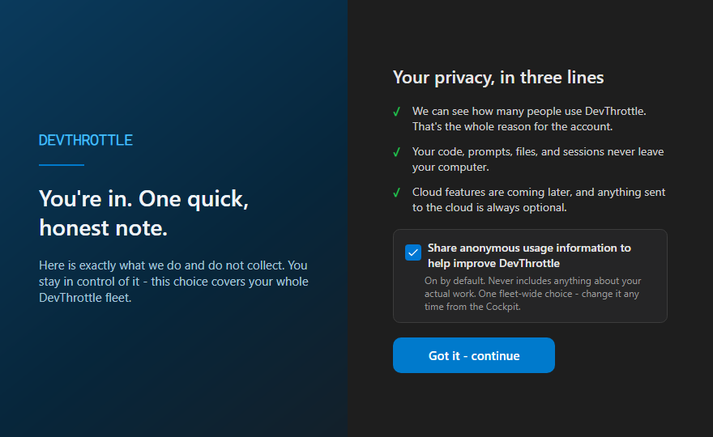

Gateway Centralization Phase 3. Branch: issue-650-gateway-consent. Verified on a real, running Gateway build with an isolated config root (a genuine first launch).
FirstRunConsent flag. Persists gateway_consent.acknowledged in the Gateway's config.json via the non-lossy CcDirectorConfigService.MergePatch (the same store the centralized #649 setting uses). Deliberately a separate config section from the per-Director consent section.GatewaySignInTraySurface): ShouldShowConsentOnLaunch(), CurrentUsageSharingChoice() (reads the #649 default), and Acknowledge(shareUsage) which writes BOTH the centralized consent setting (TelemetryConsentConfig.Set, #649) and the gateway acknowledgement (GatewayConsentAck.MarkAcknowledged) in one step.FirstRunConsentDialog (dark theme #1E1E1E, accent #007ACC, per docs/VisualStyle.md), relocated onto the Gateway. The checkbox is the fleet-wide centralized consent; "Got it - continue" calls GatewayConsentSurface.Acknowledge off the UI thread (button disabled during the write).ShowConsentIfNeeded() only when not yet acknowledged. Closed on Quit; tracked so a Gateway restart within one run never stacks two screens.CcDirector.Gateway.Tests/Account/GatewayConsentSurfaceTests.cs (6) + CcDirector.Core.Tests/Configuration/GatewayConsentAckTests.cs (4).| # | Criterion | Expected | Actual (proven) | Result |
|---|---|---|---|---|
| 1 | Gateway's first launch shows the consent screen once; acknowledging records the acknowledgement on the gateway and sets the centralized consent value. | Screen shown on first launch; on "continue", gateway_consent.acknowledged=true and telemetry_consent written. |
Screenshot below shows the screen at first launch. Log: "ShowConsentIfNeeded: gateway consent not yet acknowledged - showing the consent screen". After clicking continue, config.json holds both keys. |
PASS |
| 2 | A subsequent gateway launch does NOT show the consent screen again (acknowledged flag persisted on the gateway). | Second launch (same config root): no consent window; decision reads the persisted ack. | Log on the second launch: "ShowConsentIfNeeded: gateway consent already acknowledged - not showing". UI Automation confirmed no consent window present. | PASS |
| 3 | The usage-sharing choice made on the screen is reflected in the gateway's centralized consent setting (#649) (verified). | Unchecking the box and continuing sets the centralized #649 setting to OFF. | Box unchecked via UI Automation, continue clicked. config.json -> telemetry_consent: false; the live #649 endpoint GET /gateway/telemetry-consent returns {"enabled":false} (and still false after a restart). |
PASS |
| 4 | Proof shows the consent screen at gateway first launch, the persisted acknowledgement, and no re-show on the next launch. | Screenshot + persisted state + second-launch evidence. | All present below (screenshot, config.json, endpoint snapshot, log slices). | PASS |
Rendered from the running Gateway build (devthrottle-gateway.exe) on a fresh isolated config root, so this is a genuine first launch.

After unchecking the usage-sharing box and clicking "Got it - continue", the Gateway's config.json holds both the acknowledgement and the centralized consent value:
{
"telemetry_consent": false,
"gateway_consent": {
"acknowledged": true
}
}
The live centralized #649 endpoint reflects the same choice (and survives a Gateway restart):
GET /gateway/telemetry-consent -> {"enabled":false}
=== FIRST LAUNCH: consent screen shown, then acknowledged (opted OUT) === [GatewayConsentAck] HasAcknowledged: no persisted value -> default false (gateway consent screen not yet shown) [GatewayTrayController] ShowConsentIfNeeded: gateway consent not yet acknowledged - showing the consent screen [GatewayConsentWindow] Shown: gateway first-run consent screen ... [GatewayConsentWindow] Continue clicked: persisting centralized usage-sharing choice shareUsage=False and acknowledging gateway consent [GatewayConsentSurface] Acknowledge: writing centralized consent shareUsage=False and recording the gateway acknowledgement [TelemetryConsentConfig] Set: enabled=False ... persisted [GatewayConsentAck] MarkAcknowledged: persisting acknowledged=true ... persisted === SECOND LAUNCH: not re-shown === [GatewayTrayController] ShowConsentIfNeeded: gateway consent already acknowledged - not showing
Full slices in gateway-logs.txt; persisted config in config-after-acknowledge.json; endpoint snapshot in endpoint-after-acknowledge.txt.
CcDirector.Gateway.Tests - GatewayConsentSurfaceTests : Passed 6, Failed 0 CcDirector.Core.Tests - GatewayConsentAckTests : Passed 4, Failed 0 Full solution build - Build succeeded. 0 Warning(s) 0 Error(s) (TreatWarningsAsErrors on)
No architecture or security drift. The change is additive UI within the already-documented CcDirector.GatewayApp and CcDirector.Gateway containers: it reuses the existing config.json store and the existing #649 centralized consent setting and its endpoint. No new container, no new endpoint, no new external integration, no new credential/token handling, no security boundary change. Per CenCon law 3, no docs/cencon update is required. Security profile last_verified 2026-06-09 (within the 30-day threshold).
FirstRunConsentDialog - Director cleanup issue #651.I believe this is finished. All four acceptance criteria are proven on a running Gateway build.